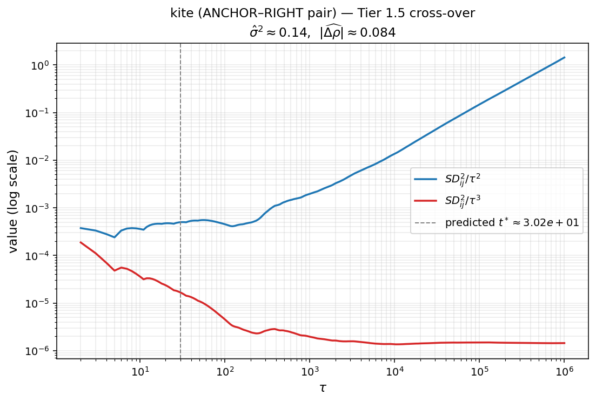
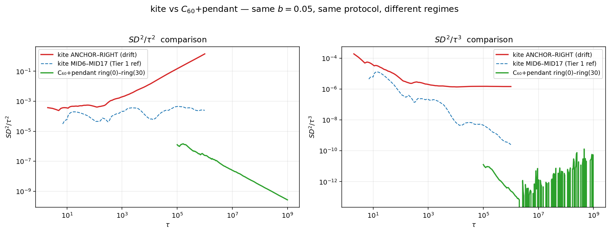

연구 ▷ HST ▷ Tier 1.5 cross-over 실증 — kite vs C₆₀+pendant
Snow Distance \(SD^2_{ij}(t) = \sum_{s=0}^t (h(v_i,s)-h(v_j,s))^2\) 의 후미 스케일링은 두 노드의 장기 적립률 \(\rho_i, \rho_j\) 에 따라 셋 중 하나로 갈린다. \(\rho_i = \rho_j = 1/n\) 이면 \(SD^2/t \to c\), 같지만 글로벌 불균형이면 \(SD^2/t^2 \to \sigma^2/2\), 다르면 \(SD^2/t^3 \to \bar b^2(\rho_i-\rho_j)^2/3\) 이다. 본 글은 한 그래프 안에서 같은 \(b\), 같은 시뮬 양식으로 두 regime 사이 cross-over 가 어디서 일어나는지를 직접 본다. 연모양 kite 실험 과 C₆₀+pendant 실험 두 데이터를 그대로 가져와 비교한다.
§1. cross-over 식 풀이
높이 차이를 drift 와 fluctuation 으로 나눠 본다. 양 노드의 적립률 차이가 \(\Delta\rho := \rho_i - \rho_j\) 이고 평균 적립량이 \(\bar b = b/2\) 이면, 적당한 시점 \(s\) 에서
\[ h(v_i, s) - h(v_j, s) \;\approx\; \bar b\,\Delta\rho \cdot s \;+\; \xi_{ij}(s). \]
첫 항은 결정적(deterministic) drift 이고 \(s\) 에 선형이다. 둘째 항은 walker 의 occupation fluctuation 으로 평균 0 이고 분산이 \(\sigma_{ij}^2 \cdot s\) 의 CLT scaling 을 따른다.
제곱해서 세 항으로 쪼개면
\[ (h_i(s) - h_j(s))^2 \;=\; \underbrace{\bar b^2 \Delta\rho^2\, s^2}_{\text{drift squared,}\ \sim s^2} \;+\; \underbrace{2 \bar b\,\Delta\rho\, s\, \xi_{ij}(s)}_{\text{cross term,}\ \sim s^{3/2}} \;+\; \underbrace{\xi_{ij}(s)^2}_{\text{fluctuation squared,}\ \sim s\ \text{in expectation}}. \]
이 식을 \(s=0\) 부터 \(t\) 까지 더하면 (cross term 은 평균 0 이라 leading order 에서 사라진다)
\[ SD^2_{ij}(t) \;\approx\; \bar b^2 \Delta\rho^2 \cdot \sum_{s=0}^t s^2 \;+\; \sigma_{ij}^2 \cdot \sum_{s=0}^t s. \]
표준 합 공식 \(\sum s^2 \approx t^3/3\), \(\sum s \approx t^2/2\) 를 넣으면
\[ SD^2_{ij}(t) \;\approx\; \frac{\bar b^2 \Delta\rho^2}{3}\, t^3 \;+\; \frac{\sigma_{ij}^2}{2}\, t^2. \]
이제 두 항이 같아지는 시점을 보자. \(\frac{\bar b^2 \Delta\rho^2}{3} t^3 = \frac{\sigma_{ij}^2}{2} t^2\) 를 \(t\) 에 대해 풀면
\[ t^* \;=\; \frac{3\,\sigma_{ij}^2}{2\,\bar b^2\,\Delta\rho^2}. \]
이 \(t^*\) 가 cross-over scale 이다.
- \(t \ll t^*\) 영역: \(t^2\) 항이 dominant 하므로 \(SD^2/t^2 \to \sigma_{ij}^2/2\) — Tier 1 effective, slope 2 의 plateau.
- \(t \gg t^*\) 영역: \(t^3\) 항이 dominant 하므로 \(SD^2/t^3 \to \bar b^2 \Delta\rho^2/3\) — Tier 0 asymptotic, slope 3 의 plateau.
- \(\Delta\rho\) 가 작을수록 \(t^*\) 가 커진다. 즉 약한 drift 일수록 cross-over 가 늦게 일어난다.
핵심은 한 곡선 안에서 두 plateau 가 모두 보일 수 있다는 점이다. \(SD^2/t^2\) 곡선은 \(\tau < t^*\) 에서 plateau, \(\tau > t^*\) 에서 \(1/\tau\) 로 감소한다. 같은 곡선의 \(SD^2/t^3\) 표현은 \(\tau < t^*\) 에서 \(1/\tau\) 로 감소, \(\tau > t^*\) 에서 plateau 다. 두 곡선을 한 panel 에 겹쳐 그리면 plateau 의 자리가 정확히 cross-over 시점에서 바뀐다.
§2. kite — 작은 drift 의 cross-over
연모양 kite 실험 의 데이터를 그대로 본다. 그래프는 \(K_{2,20} + \text{RIGHT}\), 즉 LEFT (degree 20) 와 ANCHOR (degree 21) 사이 20개의 병렬 internal node, 그리고 ANCHOR 에서 RIGHT (degree 1) 로 직접 가는 한 edge. 양방향이고 \(b=0.05\), \(T_{\max}=20\), \(\tau = 10^6\).
block 메커니즘 있는 Full HST 라 이론적으로는 충분히 큰 \(\tau\) 에서 \(\rho_i = 1/n\) 균등이 보장된다. 그런데 RIGHT 는 degree 1 의 pendant 이고 그래프가 작아서 (\(n=23\)), \(\tau = 10^6\) 까지 시뮬해도 \(\rho_\text{RIGHT}(t)\) 가 균등에 완전히 도달하지 못한다. ANCHOR–RIGHT pair 의 후미 데이터에서
- \(SD^2/t^3\) 의 후미 plateau ≈ \(1.5\times 10^{-6}\)
가 측정되고, 이 값에서 \(\bar b^2 \Delta\rho^2/3 \approx 1.5\times 10^{-6}\) 를 거꾸로 풀면
\[ |\Delta\rho| \;\approx\; \sqrt{\frac{3 \times 1.5\times 10^{-6}}{(0.025)^2}} \;\approx\; 0.084. \]
즉 ANCHOR 와 RIGHT 의 장기 적립률 차이가 약 8% 정도 남아 있다. 이론 균등 \(1/23 \approx 0.043\) 의 두 배 정도라 결코 무시할 수 없는 transient 다.
다른 쪽으로 σ² 를 추정한다. MID-MID pair (degree 2 끼리, 대칭) 들은 \(\Delta\rho = 0\) 이므로 순수 Tier 1 effective. 이 pair 들의 후미 \(SD^2/t^2\) 의 typical 값에서
\[ \sigma^2 \;\approx\; \frac{2 \cdot (SD^2/t^2)_\text{tail}}{\bar b^2} \;\approx\; 0.14. \]
이 두 값을 §1 의 식에 넣으면
\[ t^* \;\approx\; \frac{3 \times 0.14}{2 \times (0.025)^2 \times (0.084)^2} \;\approx\; 4.8 \times 10^4. \]
그러니 \(\tau\) 가 \(5 \times 10^4\) 근처에서 두 plateau 가 자리를 바꿔야 한다. 시뮬 범위 \(\tau \in [1, 10^6]\) 안에 잘 들어온다.

파란 곡선 \(SD^2/\tau^2\) 는 작은 \(\tau\) 에서 자라다가 \(\tau \approx 10^4\) 근처에서 peak (이 값이 곧 \(\sigma^2/2 \cdot \bar b^2\) scale) 에 도달한 후, 그 다음부터는 천천히 \(1/\tau\) 로 감소한다. 빨간 곡선 \(SD^2/\tau^3\) 은 반대로 작은 \(\tau\) 에서는 \(1/\tau\) 로 감소하다가, \(\tau \approx 5 \times 10^4\) 부근부터 plateau (이 값이 곧 \(\bar b^2 \Delta\rho^2/3\)) 로 진입한다. 회색 점선이 예측 \(t^*\) 이고, 실제 두 곡선의 자리 바꿈이 이 부근에서 정확히 일어난다.
§3. C₆₀+pendant — block 잘 작동, cross-over 안 보임
같은 양식의 다른 그래프를 본다. C₆₀+pendant 실험 의 그래프는 60-cycle ring 에 한 노드 (index 15) 에 한 개의 pendant 가 직접 매달린 형태. \(n=61\), \(b=0.05\), \(\tau = 2 \times 10^9\) (kite 보다 3 자릿수 더 큼).
ring 의 두 노드 사이 (예: ring(0)–ring(30)) 페어를 보면
- \(SD^2/\tau\) 는 후미에서 일정한 상수로 수렴한다. 즉 slope 1, \(SD^2 \sim t^1\), Tier 2 (Thm A balanced).
- \(SD^2/\tau^2\) 와 \(SD^2/\tau^3\) 은 둘 다 후미에서 감소한다 (각각 \(1/\tau\), \(1/\tau^2\) 의 속도). 즉 후미 plateau 가 존재하지 않는다.
block 메커니즘이 충분한 시간 동안 작용해서 모든 노드의 \(\rho_i\) 가 \(1/61\) 로 균등에 도달했고, drift 항이 완전히 사라진 것이다. cross-over scale \(t^*\) 는 \(\Delta\rho \to 0\) 의 극한이라 발산하고, 시뮬 범위 안에 cross-over 가 들어오지 않는다.

세 곡선을 한 panel 에 비교한다. 빨간 곡선 (kite ANCHOR–RIGHT) 은 §2 에서 본 cross-over 의 두 plateau 가 명확히 보인다. 파란 점선 (kite MID6–MID17) 은 후미에서 \(SD^2/\tau^2\) 가 plateau, \(SD^2/\tau^3\) 가 감소 — 순수 Tier 1 effective (\(\Delta\rho = 0\), σ² 만 존재). 초록 곡선 (C₆₀+pendant ring(0)–ring(30)) 은 둘 다 후미에서 감소 — 두 항 모두 leading 아니고 \(t^1\) 항이 dominant 인 Tier 2.
§4. 같은 양식, 다른 regime — 왜?
두 그래프의 차이를 정리한다.
- 그래프 크기: kite \(n=23\), C₆₀+pendant \(n=61\). \(\rho_i = 1/n\) 의 균등 도달은 큰 \(n\) 일수록 느리지만, 동시에 \(|\Delta\rho|\) 의 균등 편차도 작아진다.
- 시뮬 길이: kite \(\tau = 10^6\), C₆₀+pendant \(\tau = 2 \times 10^9\). 큰 \(\tau\) 일수록 \(\rho_i(t) \to 1/n\) 균등에 가까워진다.
- pendant 위치: kite 의 RIGHT 는 degree 1, ANCHOR 와 직접 연결. C₆₀+pendant 의 pendant 도 degree 1 인데, 큰 ring 의 한 노드와만 연결. ring 자체가 대칭 (cycle) 이라 ring 노드들끼리는 자동으로 균등.
핵심은 finite \(\tau\) 에서 \(\rho_i(t)\) 가 1/n 으로 가는 transient 다. kite 의 ANCHOR–RIGHT pair 처럼 그래프 양 끝 (큰 hub vs 작은 pendant) 의 차이가 클수록, 그리고 그래프가 작을수록 transient 가 visible scale 에 남아 있다. 그러면 §1 의 분해 안 drift 항 \(\bar b^2 \Delta\rho^2 t^3 / 3\) 이 실재하고, 충분히 큰 \(t\) 에서는 fluctuation 항을 압도한다.
반대로 C₆₀+pendant 는 그래프도 크고 (\(n=61\)), 시뮬도 충분히 길어 (\(\tau = 2 \times 10^9\)) transient 가 모두 씻겨나갔다. 모든 pair 가 Tier 2 (Thm A) 에 도달했고 cross-over 가 발생할 자리가 사라졌다.
정리
- Snow Distance 의 후미 스케일링 세 regime 사이의 cross-over scale 은 \(t^* = 3\sigma^2/(2 \bar b^2 \Delta\rho^2)\) 다.
- kite 의 ANCHOR–RIGHT pair 에서 \(|\Delta\rho| \approx 0.084\), \(\sigma^2 \approx 0.14\) 라 \(t^* \approx 4.8\times 10^4\) 가 예측되고, 시뮬 데이터의 두 곡선이 이 시점에서 자리를 바꾸는 것이 관측된다.
- C₆₀+pendant 는 더 큰 그래프 + 더 긴 시뮬 덕분에 모든 pair 가 Tier 2 (balanced) 에 도달했고 cross-over 가 발생하지 않는다.
- 즉 같은 \(b\), 같은 시뮬 양식이라도 그래프 크기와 시뮬 길이의 조합에 따라 어떤 regime 이 보이는지가 결정된다. kite 같은 작은 그래프 + 적당한 \(\tau\) 가 cross-over 를 직접 보고 측정하기에 좋은 setup 이다.